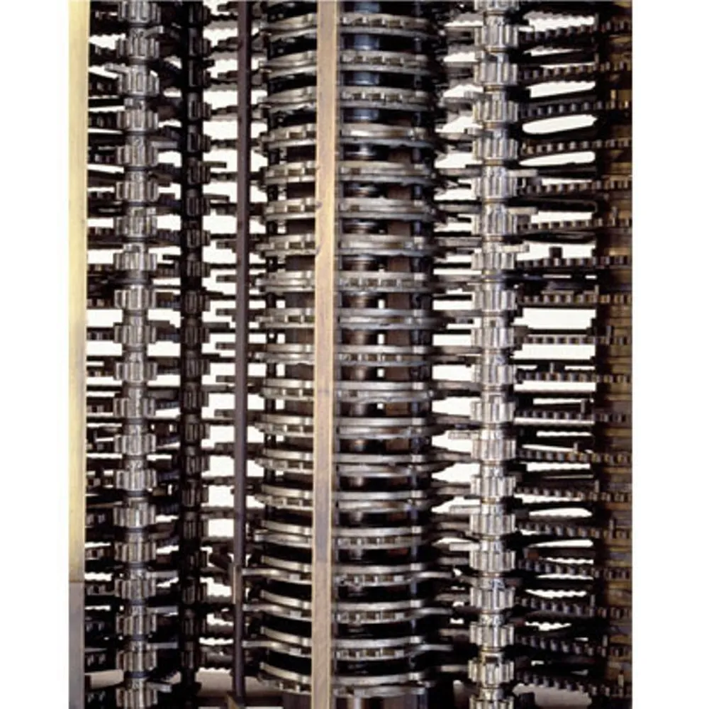
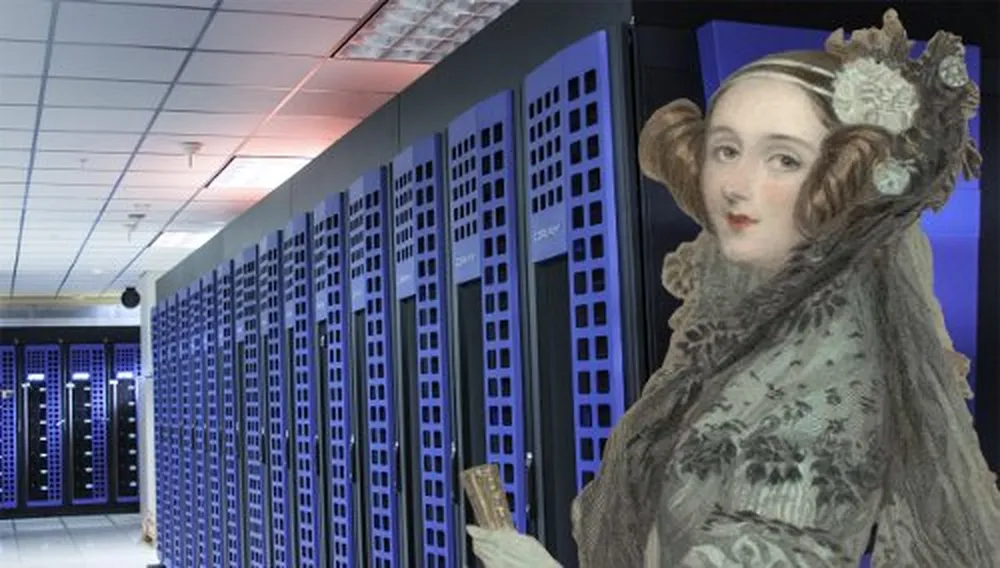

Quem foi Ada Lovelace?
Nascida como Augusta Ada Byron em 10 de dezembro de 1815 em Londres, na Inglaterra, Reino Unido, Ada Lovelace foi a única filha legítima do famoso poeta Lord George Gordon Byron, autor do poema narrativo “Don Juan”. Do outro lado da árvore genealógica, sua mãe, Anne Isabella Milbanke, era uma jovem bem-educada entusiasta da matemática e ciências. A separação do casal ocorreu cerca de um mês após o nascimento da filha, quando Byron abandonou a família para morar fora da Inglaterra.
A educação de Ada foi direcionada para as áreas de interesse da mãe desde muito cedo. Instruídos por Lady Byron, os tutores particulares da pequena Ada se concentravam em disciplinas como matemática, lógica e ciências, matérias consideradas incomuns para as mulheres da época.
Na fase adulta, Ada passou a frequentar a Universidade de Londres, onde estudou matemática avançada e outras disciplinas científicas. Mais tarde, tornou-se condessa de Lovelace, após seu casamento com William King, conde de Lovelace, com quem teve três filhos. A vida matrimonial não impediu que ela aprofundasse o estudo na matemática. Sob a supervisão do renomado matemático Augustus De Morgan, da Universidade de Londres, ela continuou suas pesquisas, mesmo sem ter ingressado no ensino superior.
Ao longo de sua vida, Lovelace sempre demonstrou profundo interesse pelo trabalho do matemático e engenheiro Charles Babbage. Ao ser convidada para traduzir um artigo sobre o mecanismo analítico de Babbage, ela introduziu seus próprios pensamentos a respeito do funcionamento da máquina, o que mais tarde foi convertido no primeiro algoritmo já feito. O trabalho foi publicado em 1843, em uma revista científica inglesa.
Ada Lovelace faleceu em 27 de novembro de 1852, aos 36 anos de idade, em Londres. Sua morte precoce foi resultado de um câncer uterino. Apesar da vida curta, suas contribuições para a ciência da computação e sua visão pioneira deixaram um legado duradouro.
Máquina Analítica e Charles Babbage
Os caminhos de Ada Lovelace e Charles Babbage se cruzaram em 1833, quando se conheceram através de amigos em comum. Na época, Ada era apenas uma adolescente de cerca de 17 anos, mas já nutria profundo interesse pelas máquinas do matemático britânico. Babbage, por sua vez, reconheceu o talento da jovem e incentivou que ela aprofundasse os estudos matemáticos. Inclusive, foi através dele que Ada começou a ter aulas com o professor da Universidade de Londres, Augustus de Morgan.
A colaboração mais notável entre Ada Lovelace e Charles Babbage ocorreu quando Ada traduziu e expandiu um artigo escrito pelo engenheiro italiano Luigi Federico Menabrea sobre a Máquina Analítica de Babbage. Publicado em 1843, o estudo de Ada Lovelace é considerado um marco na história da ciência da computação. Ela antecipou conceitos fundamentais à programação e descreveu um exemplo específico de algoritmo, considerado o primeiro programa de computador da história.
Criada para ser a sucessora da máquina diferencial, a maquina analítica de Babbage tinha um design bastante avançado para a época. O equipamento contava com uma unidade de armazenamento, onde seriam realizadas as operações matemáticas, uma unidade de memória, que permitia que o equipamento armazenasse e recuperasse instruções e dados, e até mesmo um dispositivo de impressão para registrar os resultados. Embora minuciosamente planejada, a máquina nunca chegou a ser construída por Babbage.
Legado de Ada Lovelace
Mesmo que o artigo mais famoso de Ada Lovelace tenha sido publicado enquanto ela ainda estava em vida, a real dimensão da importância de suas anotações só foi conhecida cerca de cem anos depois, quando o engenheiro e cientista Bertram Vivian Bowden as reintroduziu em um artigo em 1953.
De lá pra cá, os estudos de Ada Lovelace continuaram a influenciar a ciência da computação e a tecnologia até os dias de hoje. Sua visão pioneira e suas contribuições para a programação e o potencial dos computadores estabeleceram as bases para o desenvolvimento de uma área que transformou o mundo moderno.